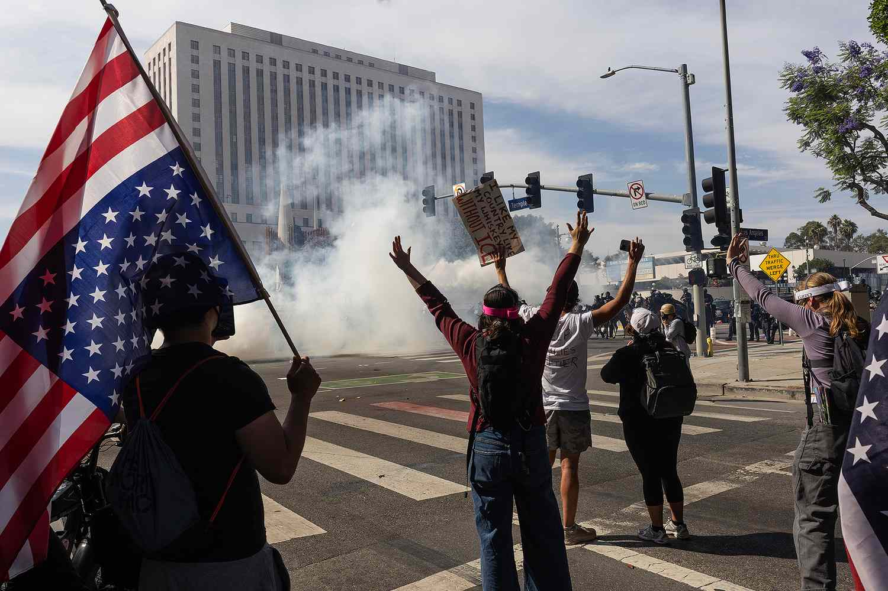
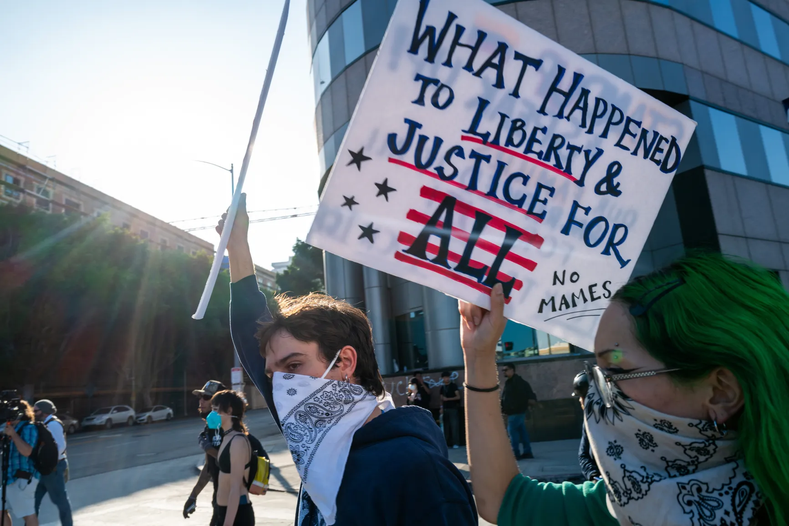

Ice apparently says they use self defence to protect themself and the citizens around them, but is that really true? ERO's work is critical to the enforcement of immigration law against those who present a danger to our national security, are a threat to public safety, or who otherwise undermine the integrity of our immigration system. so they say?
The point of protesting is to demand change, voice dissent, and bring attention to issues by influencing public opinion. Protests raise awareness, build solidarity among participants, signal the urgency of a cause, and can mobilize voters there should be no reason to use violence against innocent protesters who are using no violence
Gen Z protests are surging globally due to deep frustration with corruption and inequality, amplified by social media and a sense of powerlessness with traditional politics, leading them to demand fundamental structural reforms for better governance, human rights, and a sustainable future. They feel disillusioned with existing systems and see little future under older elites, fueling moral outrage and a drive for change in countries from Asia to Latin America, as seen in successful movements.

